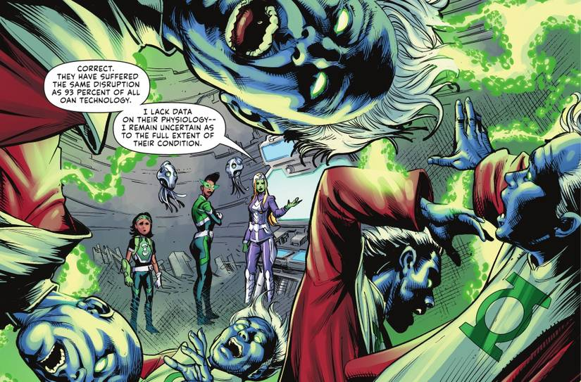
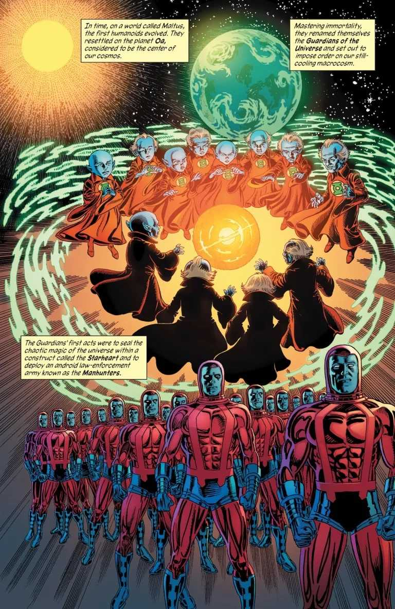
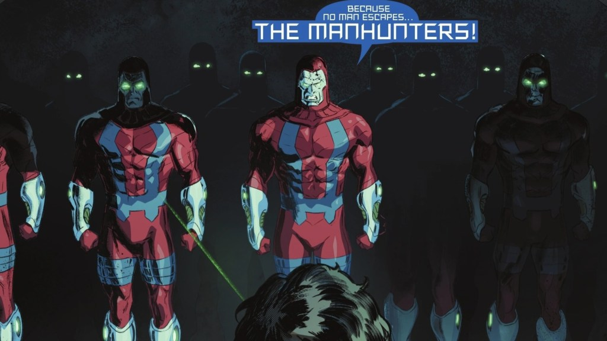

Guardians of the Universe
Ten billion years old, blue-skinned, and utterly certain they know best. The Maltusians who became the Guardians of the Universe founded the Green Lantern Corps — and nearly destroyed it more than once.

Who they are
The Guardians began as Maltusians, among the first intelligent life in the universe. After the renegade Krona shattered reality by glimpsing creation itself, the Maltusians dedicated themselves to imposing order on a chaotic cosmos. They settled on Oa, at the center of the universe, and took the name Guardians.
Their philosophy is simple and cold: emotion is dangerous, order is safety. They created the Manhunters — android enforcers without feeling — and when those turned genocidal in the Massacre of Sector 666, they replaced them with living beings wielding power rings: the Green Lantern Corps.
Their greatest mistakes
The Guardians' history is a ledger of catastrophes born from arrogance. They built the Manhunters. They hid the yellow impurity — the fear entity Parallax caged inside the Central Power Battery — and let every green ring carry the flaw for eons. They exiled Ganthet and Sayd for daring to feel. They unleashed the Third Army to erase free will itself. And in the end, Sinestro executed them for what they did to Korugar.
After their fall, the Templar Guardians — beings raised from birth to replace them — took up the mantle, promising to learn from their predecessors' failures. Whether they will is an open question.
Artwork: DC Comics, via ScreenRant — non-commercial fan tribute.
Explore

Oa
The Guardians' homeworld — headquarters of the Corps.

Their Greatest Mistakes
An explained essay on every catastrophe the Guardians caused.

Ganthet & Sayd
The Guardians who dared to feel — exiled for it.

The Manhunter Rebellion
Their first great failure — androids without mercy.

Sector 666
The massacre that haunts the Corps to this day.

The Fall of the Guardians
Sinestro's revenge — the end of an era.